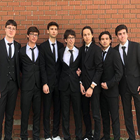
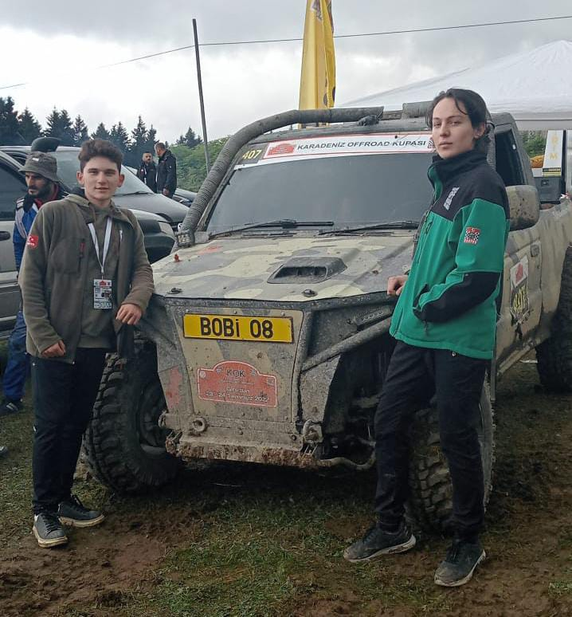

Ben kimim
Ben Furkan KESİCİOĞLU; 2004 Giresun Merkez doğumluyum. Ortaokulunu Kanuni Ortaokulunda okuduktan sonra Gireun Fen Lisesini kazandım, küçüklüğümden beri bilgisayarlara yakın olmam sebebiyle mezun olduktan sonra Sakarya Üniversitesi Bilgisayar Mühendisliği bölümüne gitmeyi tercih ettim. Şu an Üniversitede 1.sınıfım.

2022 Giresun Fen Lisesi
Hobim
Hobilerimin başında arabalar geliyor her türlü tekeri ve motoru olan nesnelere ilgim var.Araba sporlarını yakından takip eder, modeller alır ve günlük olarak videolar izlerim :D zaten instagramım baştan sonra arabalarla dolu.

2022 KARADENİZ OFFROAD KUPASI şampiyonu.